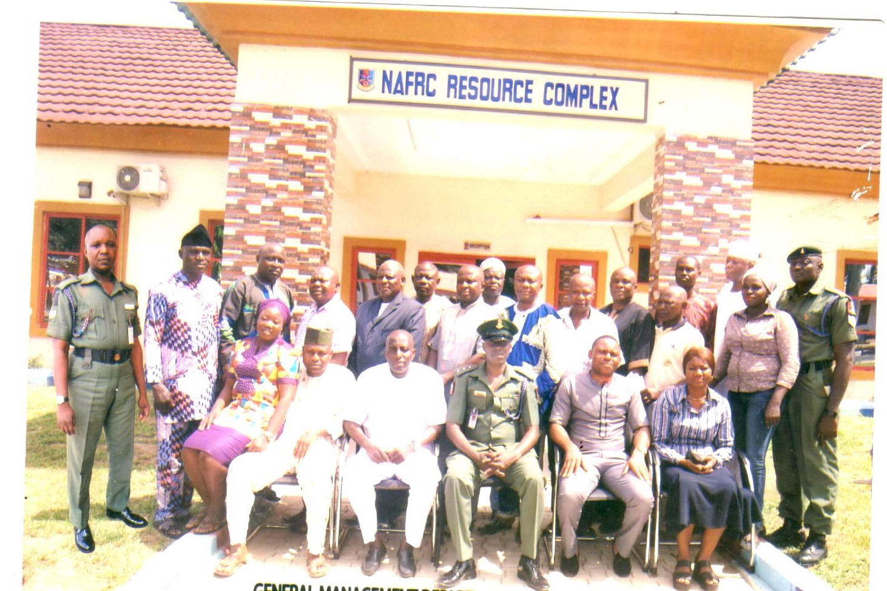
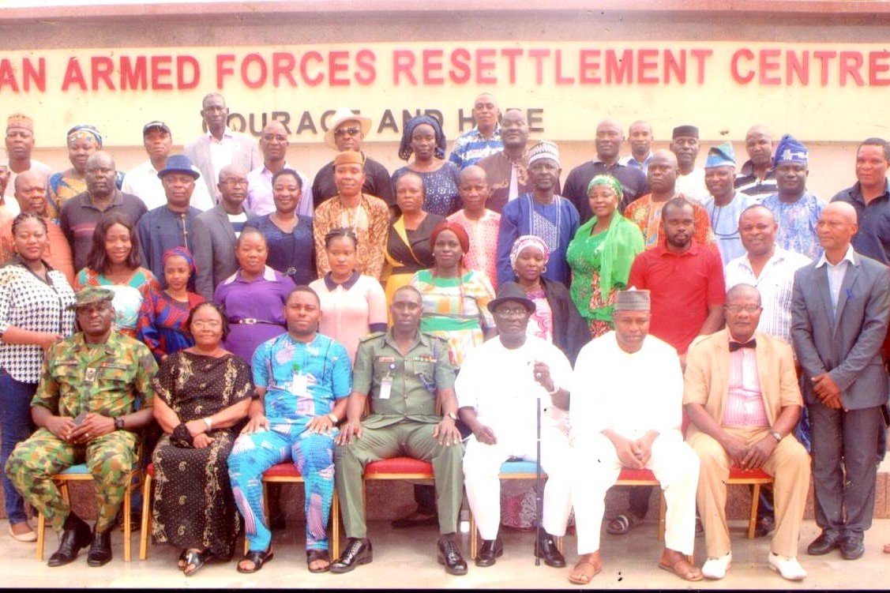

The management wing of NAFRC consist of five departments covering various areas of business and entrepreneurial management and they are as follows: Enterpreneurship and General studies management, Security and safety, Waste Management and General Management.
ENTREPRENEURSHIP AND GENERAL STUDIES
Management Wing is one out of the many Wings in NAFRC saddle with the responsibility of equipping the Trainees of the Centre with relevant trades and vocation skills of their choice for better post service life. The Department of Entrepreneurship and General Studies is one of the Departments under the Management Wing that offers Courses to all the Trainees of the Centre on Retirement compatible entrepreneurial activities and Management of small-scale business of their choice.
STATUTORY TASKS/ RESPONSIBILITY
The major activities of the department is to render quality services to the trainees on how to do the following:
- Establish their own business.
- Have a successful retirement plan.
- Recruit and select the right employees that will add value to their business.
- Market their product and their target and prospective customers
- Communicate effectively with customers and suppliers.
- Keep proper book of account on the day-to-day activities of the business.
- Write a feasibility report on their choosing business
FACILITIES AVAILABLE:
Due to the large number of trainees, Danjuma Hall has been provided to accommodate them for their lectures every Tuesday.
| Course 01/2019 | Course 02/2019 | Course 01/2020 | Course 02 Stream 01/2020 | Course 02 Stream 02/2020 | Course 01/2021 | |
|---|---|---|---|---|---|---|
| NA | 252 | 230 | 174 | 81 | 267 | |
| NN | 117 | 128 | 98 | 65 | 69 | 73 |
| NAF | 140 | 197 | 16 | 10 | 12 | 07 |
| DSS | 02 | |||||
| DA | 02 | |||||
| NAI | 02 | |||||
| ACIS | 01 | |||||
| FRSC | 02 | |||||
| Total | 257 | 577 | 344 | 256 | 164 | 347 |
SECURITY AND SAFETY MANAGEMENT DEPARTMENT
The Department of Security and Safety Management is one of the Departments under the Management Wing that offers Courses to some Trainees in conjunction with Yaba College of Technology Consult runs training and certificate course on Industrial Security and Safety, Occupational Health and Environment on Saturdays. At the end of the course an award of Professional Diploma and graduate Specialist Certificate is awarded by the Yaba College of Technology Consult to the participants.FACILITIES AVAILABLE:
The Resources complex Main Hall has been provided to accommodate them for their lectures every Mondays, Wednesdays and Fridays.
NUMBER OF TRAINEES GRADUATED
The number of trainees graduated from the period covered from 2019 till date includes:
| Course 01/2019 | Course 02/2019 | Course 01/2020 | Course 02 Stream 01/2020 | Course 02 Stream 02/2020 | Course 01/2021 | |
|---|---|---|---|---|---|---|
| NA | 22 | 74 | 28 | 10 | 24 | |
| NN | 16 | 28 | 19 | 04 | 12 | 05 |
| NAF | 25 | 19 | 11 | 04 | ||
| FRSC | 01 | |||||
| TOTAL | 41 | 69 | 93 | 43 | 23 | 33 |
WASTE MANAGEMENT DEPARTMENT
Waste Management Department is a department under management wing that is responsible for enlightening trainees on the opportunities available in the value chain of Waste Management, right from the waste production process to collection and finally disposal through to recycling stage. Furthermore, the department is mandated to equip trainees on basic knowledge to appreciate our natural environment, health and to be safety conscious. The department equally helps to identify small and medium scale enterprise (SMEs)/Post Service Investment Opportunities in solid/liquid Waste Management. The department is in conjunction with Monaplex Industries ltd (plastic Recycling & Production), We-cyclers Nig Ltd (plastic Waste Aggregators) and E terra technologies Ltd (E Waste).
STATUTORY TASK / RESPONSIBILITY
The major activities of the department are to render quality services to the trainees on how to do the following:
- Appreciate our natural environment and roles of waste management in sustaining our environment.
- Appreciate basic principles of waste management.
- Appreciate health and safety awareness in waste management operations/processes.
- Identify small and medium scale Enterprises/post service investment opportunities in solid waste management.
NUMBER OF TRAINEES GRADUATED The number of trainees graduated from the period covered from 2019 till date includes:
| Course 01/2019 | Course 01/2020 | Course 01/2021 | |
|---|---|---|---|
| NA | 4 | 1 | |
| NN | 2 | 2 | 5 |
| NAF | 2 | ||
| TOTAL | 8 | 3 | 5 |
GENERAL MANAGEMENT DEPARTMENT
General Management department is one of the departments in management wing. The department is saddle with the responsibility of equipping trainees with the basic rudiment of managerial skills techniques and principle of management. Furthermore, the department (General management) is also mandated in equipping trainees on basic knowledge on how to set up a small scale business of their own, become a good manager in managing their resources effectively and efficiently in other to have a successful life after retirement from military active service.STATUTORY TASK/RESPONSIBILITY The statutory tasks and responsibilities of the department is strictly and purely Academic. i.e Teaching and Learning. The instructors in the department are responsible in training trainees on how to manage and set business of their own after retirement. The Teachings include the following:
- Principle of Accounting.
- Principle of marketing/Digital marketing.
- Personal Management.
- Principle of Economics.
- Business law.
- Small scale Business.
- Risk and Wealth management.
- Industrial Relation.
- Principle of Management.
NUMBER OF TRAINEES GRADUATED: The number of trainees graduated from the period covered from 2019 till date includes:
| Course 01/2019 | Course 02/2019 | Course 01/2020 | Course 02 Stream 01/2020 | Course 02 Stream 02/2020 | Course 01/2021 | |
|---|---|---|---|---|---|---|
| NA | 14 | 16 | 6 | 2 | 11 | |
| NN | 8 | 14 | 5 | 2 | 6 | 4 |
| NAF | 4 | 4 | 1 | |||
| TOTAL | 12 | 32 | 21 | 8 | 8 | 16 |
 